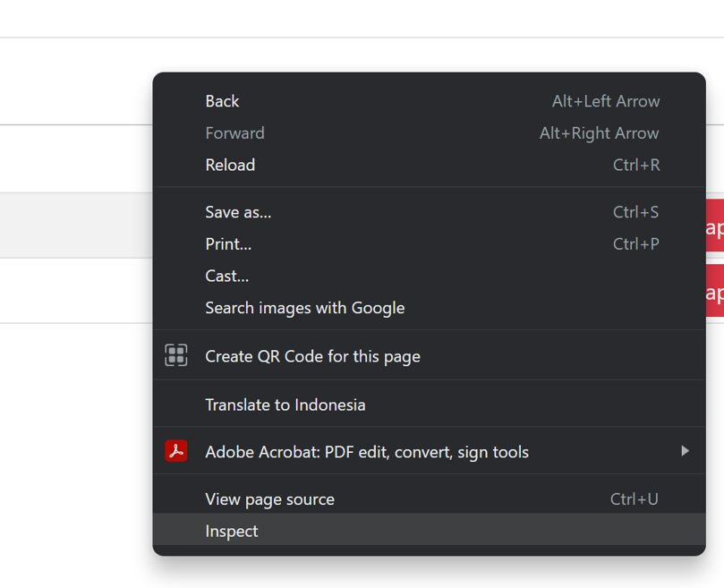
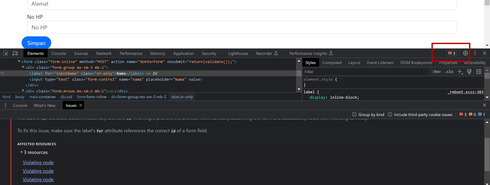
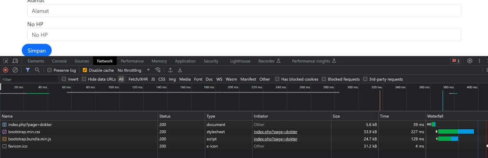
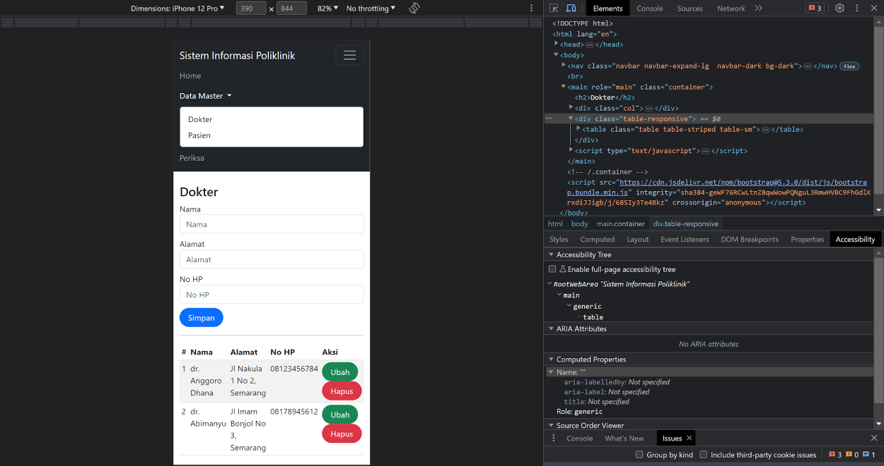

Pengujian Web
Debugging
proses mengidentifikasi, memahami, dan memperbaiki kesalahan atau bug dalam kode web. Tujuan utama dari debugging adalah untuk memastikan bahwa aplikasi web berfungsi dengan baik, memperbaiki masalah yang muncul, dan mengoptimalkan kualitas serta kinerja situs web.
Identifikasi Bug
Proses debugging dimulai dengan mengidentifikasi adanya bug atau masalah dalam aplikasi web. Ini bisa didasarkan pada keluhan pengguna, error message yang muncul, atau perilaku yang tidak diharapkan pada situs web. Pemahaman yang jelas tentang apa yang seharusnya terjadi dan apa yang sebenarnya terjadi penting untuk mengidentifikasi bug.
Log dan Pesan Kesalahan
Menggunakan log dan pesan kesalahan adalah cara umum untuk memahami dan melacak bug dalam pemrograman web. Penggunaan pernyataan log untuk mencatat informasi penting saat aplikasi web berjalan, serta menampilkan pesan kesalahan yang informatif saat bug terjadi, membantu dalam mengidentifikasi penyebab dan lokasi bug
Debugging Tools
Alat-alat debugger web browser yang memungkinkan inspeksi elemen HTML, CSS, dan JavaScript, serta memberikan kemampuan untuk menghentikan eksekusi kode pada titik tertentu dan melacak variabel dan status program.
Pengujian
Pengujian program adalah proses sistematis untuk mengevaluasi kualitas dan kinerja program. Tujuan utamanya adalah untuk memastikan bahwa program berfungsi dengan benar, memberikan output yang sesuai, dan memenuhi persyaratan yang ditentukan. Berikut adalah beberapa jenis pengujian program yang umum dilakukan:
Pengujian Fungsional
Pengujian fungsional bertujuan untuk memastikan bahwa semua fungsi yang ada di situs web berjalan dengan benar. Ini melibatkan memeriksa tautan, navigasi, formulir, fitur interaktif, dan fungsionalitas lainnya.
Pengujian Kompatibilitas
Pengujian kompatibilitas dilakukan untuk memastikan bahwa situs web dapat berfungsi dengan baik di berbagai platform, perangkat, dan peramban web yang berbeda. Ini mencakup pengujian responsif untuk memastikan tampilan yang sesuai di perangkat mobile, tablet, dan desktop
Pengujian Kinerja
Pengujian kinerja bertujuan untuk memastikan bahwa situs web dapat menangani beban lalu lintas yang tinggi dan memberikan kinerja yang baik dalam kondisi yang berbeda. Ini melibatkan pengujian kecepatan loading halaman, waktu respon server, penggunaan sumber daya seperti memori dan CPU, dan pengujian beban untuk menguji batasan situs web.
Pengujian Keamanan
Pengujian keamanan penting untuk melindungi situs web dari ancaman seperti serangan hacker, serangan DDoS, peretasan data, dan kerentanan lainnya. Ini mencakup pengujian kerentanan, pengujian serangan (misalnya, serangan injeksi SQL), dan pengujian autentikasi serta otorisasi untuk memastikan bahwa situs web memiliki lapisan keamanan yang memadai.
Browser Developer tools - Inspect
Inspect
Pada browser web modern telah difasilitasi dengan fitur inspect yang memungkinkan pengembang web untuk dapat memeriksa dan menganalisis elemen-elemen pada halaman web.
Membuka Inspect
Fungsi inspect dapat diakses dengan klik kanan pada halaman web lalu pilih inspect

Memeriksa Pesan Kesalahan

Terlihat pada halaman tersebut terdapat 3 pesan kesalahan mengenai variabel for dan id yang tidak memiliki kesesuaian sehingga antara label dan form tidak terhubung. Hal tersebut akan mengakibatkan label yang diklik tidak mengarah pada form yang dimaksudkan.
Network

Melalui tab network digunakan untuk memonitor lalu lintas jaringan yang dihasilkan oleh situs web, seperti melihat permintaan HTTP, waktu respon, dan memeriksa apakah ada masalah koneksi atau pengalihan yang tidak diinginkan.
Responsive Web

Dengan melakukan pengecekan responsive web dapat diketahui bagaimana kompatibilitas website pada perangkat mobile, tablet, dan desktop.